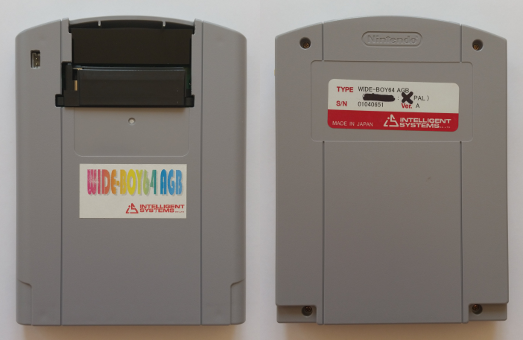
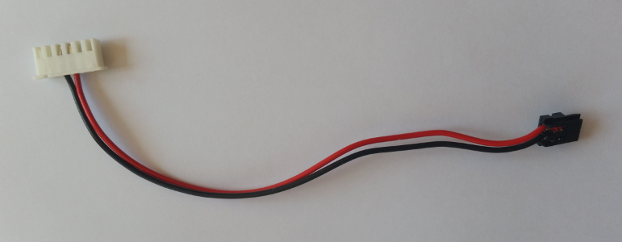
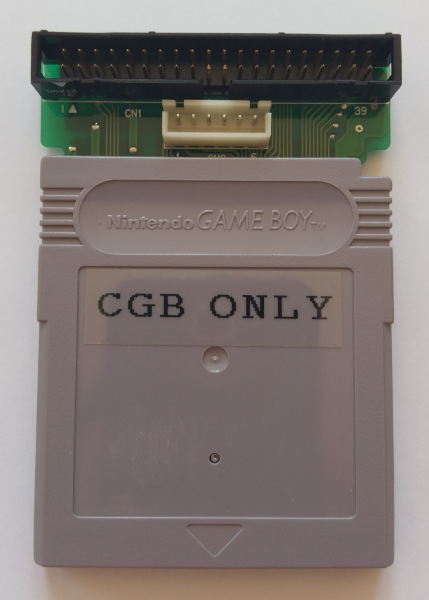
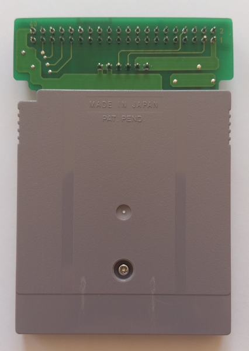
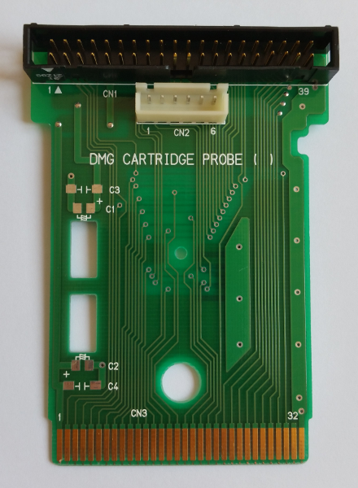
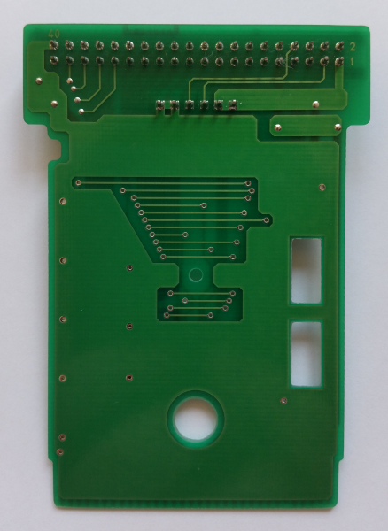
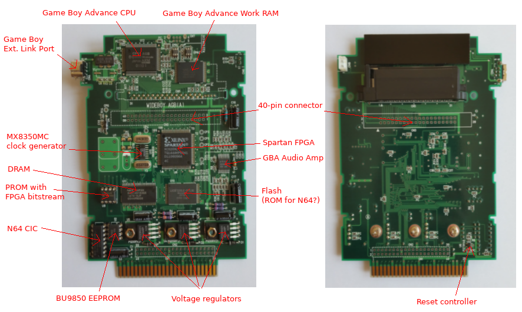
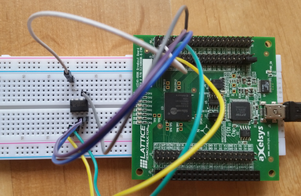
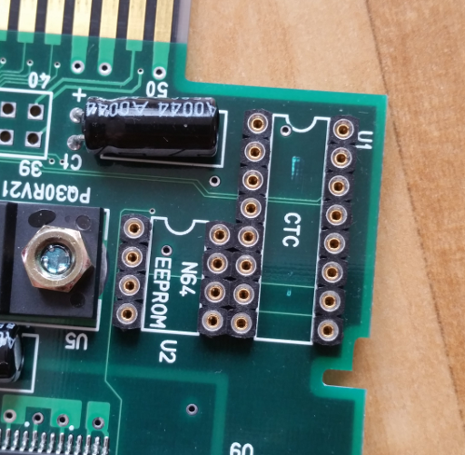

Wide-Boy64 Research
- Overview
- Wide-Boy64 CGB
- Wide-Boy64 AGB
- Schematics and ideas for building a Wide-Boy64 clone
- Random stuff
- Links
Overview
I got my hands on a Wide-Boy64 AGB that I found on Ebay. It's in a very good condition.

Picture 1
Wide-Boy64 AGB
It came with this small cable. I don't know what this is used for.

Picture 2
Cable that came with the Wide-Boy64
You can't connect any regular Game Boy to a Wide-Boy. The ones you use as a controller for the Wide-Boy don't have a Game Boy CPU. They have a different PCB that just connects the cartridge port to the display, buttons and the audio amplifier. So they just act as an I/O device.
Wide-Boy64 CGB
Since I don't have the CGB variant of the Wide-Boy64 (yet), I can only describe it's adapter here.
CGB Adapter
This is the CGB Adapter I bought:

Picture 3&4
Wide-Boy64 CGB Adapter

Picture 5&6
Wide-Boy64 CGB Adapter PCB
I have drawn a schematic for the PCB: dmg_cart_probe.pdf
I labelled the pins on the cartridge connector with the signals that they ususally have on a cartridge (address, data, ...), not the display and button signals that the Wide-Boy puts onto them. The fact that they didn't connect pin 31 (the analog pin) makes me think that this PCB wasn't designed specifically for the Wide-Boy in mind. They might have used this for probing the signals between a Game Boy and a cartridge. (Notice the silk print on the PCB: "DMG CARTRIDGE PROBE") It wouldn't make any sense to not use pin 31 otherwise.
Wide-Boy64 AGB
Components
Here is what I found out about the main components inside the Wide-Boy64 AGB. (Higher resolution pictures can be found in my Game Boy database.)

Picture 7
Components of the Wide-Boy64 AGB
The EEPROM in the bottom left (BU9850) is used in many N64 cartridges that allow to save the game. I don't know what it is used for in the Wide-Boy. My guess is, they designed it in just in case they need it, but then never used it for anything. The Wide-Boy64 AGB does not save any settings. It doesn't even have a menu or something. I haven't checked the contents of this EEPROM yet. I expect it to be all 0xFF. Ah, and yes, it is connected to the N64 connector at the bottom, so it can be accessed by the N64.
There is a second place at the top center of the PCB where a Game Boy External Link Port could be soldered in. Seems like when the PCB was designed, they haven't decided yet where to put the connector.
Luckily, the CIC, EEPROM and PROM chips are socketed. This makes it easy to change the region and dump the EEPROM and PROM contents. The Flash is not socketed though. I don't know yet if all it's contents can be accessed by the N64 or if the FPGA reads some other data than the N64 software from it as well.
The clock generator (U15) to the left of the FPGA provides a ~48.6 MHz clock to the FPGA pin 70. See page 3
of my schematic of the Wide-Boy64 AGB for details: wideboy64agb_sch.pdf
Note that the 250 MHz clock output (RCLK) just gets drained through resistor R24.
Spartan bitstream
I was able to dump the FPGA bitstream from the PROM with an iCE40HX-8K Breakout Board.

Picture 8
Wide-Boy64 AGB PROM connected to iCE40HX-8K Breakout Board
The code I used for dumping it on a 1MBit UART can be found here.
The PROM contains 179160 bits (22395 bytes) and when stored LSB-first it has the following hashes:
- MD5: 536e776798fa2ab103e49cd322fb5669
- SHA256: b41f2e84b0d14a2065dfcc17bfb7d49056a277c9c2f0ace1124c7e48b831b49f
40-pin connector (CN3) pinout on Wide-Boy64 AGB
| Pin# | Usage | To CPU | To FPGA | Pin# | Usage | To CPU | To FPGA | ||||
|---|---|---|---|---|---|---|---|---|---|---|---|
| 1 | Audio R | 6 | SO1 | - | 21 | LCD Data B2 | 100 | LDB2 | 86 | I/O | |
| 2 | Audio L | 7 | SO2 | - | 22 | LCD Data B3 | 99 | LDB3 | 87 | I/O | |
| 3 | Button B | 5 | P1 | 61 | I/O | 23 | LCD Data B4 | 98 | LDB4 | 88 | I/O (D4) |
| 4 | Button A | 4 | P0 | 62 | I/O | 24 | LCD Data B5 | 97 | LDB5 | 89 | I/O |
| 5 | Button R | 3 | P8 | 63 | I/O | 25 | LCD Data G1 | 96 | LDG1 | 92 | I/O (D3) |
| 6 | Button Start | 127 | P3 | 65 | I/O | 26 | LCD Data G2 | 95 | LDG2 | 93 | I/O |
| 7 | Button Select | 126 | P2 | 66 | I/O | 27 | LCD Data G3 | 94 | LDG3 | 94 | I/O |
| 8 | Button D-Right | 123 | P4 | 67 | I/O | 28 | GND | 102,128,... | GND | 81,91,... | GND |
| 9 | Button D-Down | 122 | P7 | 68 | I/O | 29 | LCD Data G4 | 93 | LDG4 | 95 | I/O |
| 10 | Button D-Left | 121 | P5 | 69 | I/O | 30 | LCD Data G5 | 92 | LDG5 | 96 | I/O (D2) |
| 11 | Button D-Up | 120 | P6 | 75 | I/O (D7) | 31 | LCD Data R1 | 91 | LDR1 | 97 | I/O |
| 12 | Button L | 119 | P9 | 77 | I/O | 32 | LCD Data R2 | 90 | LDR2 | 98 | I/O |
| 13 | LCD VSHD Enable? | 118 | R10 | 78 | I/O | 33 | LCD Data R3 | 89 | LDR3 | 99 | I/O |
| 14 | AGB-REG Switch? | 108 | REVC | 79 | I/O (D6) | 34 | LCD Data R4 | 88 | LDR4 | 101 | I/O (D1) |
| 15 | LCD Mode? | 107 | MOD | 80 | I/O | 35 | LCD Data R5 | 87 | LDR5 | 102 | I/O |
| 16 | LCD SPS? | 106 | SPS | 82 | I/O | 36 | GND | 102,128,... | GND | 81,91,... | GND |
| 17 | LCD CLS? | 105 | CLS | 83 | I/O | 37 | LCD PS? | 86 | PS | 103 | I/O |
| 18 | LCD SPL? | 104 | SPL | 84 | I/O (D5) | 38 | LCD LP? | 85 | LP | 104 | I/O |
| 19 | GND | 102,128,... | GND | 81,91,... | GND | 39 | LCD Data Clock? | 84 | DCK | 112 | I/O, GCK7 |
| 20 | LCD Data B1 | 101 | LDB1 | 85 | I/O | 40 | 3.3 V Supply | 1,103 | VDD3 | 128,144,... | VCC |
Table 1
Connections from Wide-Boy64 AGB 40-pin connector (CN3) to AGB CPU and Spartan FPGA
Memories connected to FPGA (and each other) on Wide-Boy64 AGB
Flash
| Pin# | Name | To FPGA | To DRAM | Pin# | Name | To FPGA | To DRAM | ||||
|---|---|---|---|---|---|---|---|---|---|---|---|
| 1 | A15 | 21 | I/O | - | 25 | A0 | 3 | I/O | 23 | A0 | |
| 2 | A14 | 20 | I/O | 21 | BA1(A12) | 26 | CE# | 28 | I/O | - | |
| 3 | A13 | 19 | I/O | 20 | BA0(A13) | 27 | GND | 27,... | GND | 41,46,... | VSS,VSSQ |
| 4 | A12 | 16 | I/O | 36 | NC | 28 | OE# | 29 | I/O | 17 | !CAS |
| 5 | A11 | 15 | I/O | 35 | A11 | 29 | DQ0 | 47 | I/O | 2 | DQ0 |
| 6 | A10 | 14 | I/O | 22 | A10 | 30 | DQ8 | 58 | I/O | 42 | DQ8 |
| 7 | A9 | 13 | I/O | 34 | A9 | 31 | DQ1 | 46 | I/O | 4 | DQ1 |
| 8 | A8 | 12 | I/O | 33 | A8 | 32 | DQ9 | 57 | I/O | 44 | DQ9 |
| 9 | A19 | 25 | I/O | - | 33 | DQ2 | 43 | I/O | 5 | DQ2 | |
| 10 | A20 | 26 | I/O | - | 34 | DQ10 | 56 | I/O | 45 | DQ10 | |
| 11 | WE# | 30 | I/O | 16 | !WE | 35 | DQ3 | 42 | I/O | 7 | DQ3 |
| 12 | RP# | 72 | DONE | - | 36 | DQ11 | 52 | I/O | 47 | DQ11 | |
| 13 | VCCW | 144,... | VCC | 1,3,... | VCC,VCCQ | 37 | VCC | 144,... | VCC | 1,3,... | VCC,VCCQ |
| 14 | WP# | 144,... | VCC | 1,3,... | VCC,VCCQ | 38 | DQ4 | 41 | I/O | 8 | DQ4 |
| 15 | RY/BY# | - | - | 39 | DQ12 | 51 | I/O | 48 | DQ12 | ||
| 16 | A18 | 24 | I/O | - | 40 | DQ5 | 39 | I/O, GCK3 | 10 | DQ5 | |
| 17 | A17 | 23 | I/O | - | 41 | DQ13 | 50 | I/O | 50 | DQ13 | |
| 18 | A7 | 11 | I/O, TMS | 32 | A7 | 42 | DQ6 | 33 | I/O, GCK2 | 11 | DQ6 |
| 19 | A6 | 10 | I/O | 31 | A6 | 43 | DQ14 | 49 | I/O | 51 | DQ14 |
| 20 | A5 | 9 | I/O | 30 | A5 | 44 | DQ7 | 32 | I/O | 13 | DQ7 |
| 21 | A4 | 7 | I/O, TCK | 29 | A4 | 45 | DQ15/A-1 | 48 | I/O | 53 | DQ15 |
| 22 | A3 | 6 | I/O, TDI | 26 | A3 | 46 | GND | 27,... | GND | 41,46,... | VSS,VSSQ |
| 23 | A2 | 5 | I/O | 25 | A2 | 47 | BYTE# | 144,... | VCC | 1,3,... | VCC,VCCQ |
| 24 | A1 | 4 | I/O | 24 | A1 | 48 | A16 | 22 | I/O | - | |
Table 2
Connections from Flash on Wide-Boy64 AGB to Spartan FPGA and DRAM
DRAM
| Pin# | Name | To FPGA | To Flash | Pin# | Name | To FPGA | To Flash | ||||
|---|---|---|---|---|---|---|---|---|---|---|---|
| 1 | VCC | 144,... | VCC | 37,13,... | VCC,VCCW | 28 | VSS | 27,... | GND | 27,... | GND |
| 2 | DQ0 | 47 | I/O | 29 | DQ0 | 29 | A4 | 7 | I/O, TCK | 21 | A4 |
| 3 | VCCQ | 144,... | VCC | 37,13,... | VCC,VCCW | 30 | A5 | 9 | I/O | 20 | A5 |
| 4 | DQ1 | 46 | I/O | 31 | DQ1 | 31 | A6 | 10 | I/O | 19 | A6 |
| 5 | DQ2 | 43 | I/O | 33 | DQ2 | 32 | A7 | 11 | I/O, TMS | 18 | A7 |
| 6 | VSSQ | 27,... | GND | 27,... | GND | 33 | A8 | 12 | I/O | 8 | A8 |
| 7 | DQ3 | 42 | I/O | 35 | DQ3 | 34 | A9 | 13 | I/O | 7 | A9 |
| 8 | DQ4 | 41 | I/O | 38 | DQ4 | 35 | A11 | 15 | I/O | 5 | A11 |
| 9 | VCCQ | 144,... | VCC | 37,13,... | VCC,VCCW | 36 | NC | 16 | I/O | 4 | A12 |
| 10 | DQ5 | 39 | I/O, GCK3 | 40 | DQ5 | 37 | CKE | 144,... | VCC | 37,13,... | VCC,VCCW |
| 11 | DQ6 | 33 | I/O, GCK2 | 42 | DQ6 | 38 | CLK | 106 | I/O, GCK6 (DOUT) | - | |
| 12 | VSSQ | 27,... | GND | 27,... | GND | 39 | UDQM | 113 | I/O | - | |
| 13 | DQ7 | 32 | I/O | 44 | DQ7 | 40 | NC | - | - | ||
| 14 | VCC | 144,... | VCC | 37,13,... | VCC,VCCW | 41 | VSS | 27,... | GND | 27,... | GND |
| 15 | LDQM | 115 | I/O (CS1) | - | 42 | DQ8 | 58 | I/O | 30 | DQ8 | |
| 16 | !WE | 30 | I/O | 11 | WE# | 43 | VCCQ | 144,... | VCC | 37,13,... | VCC,VCCW |
| 17 | !CAS | 29 | I/O | 28 | OE# | 44 | DQ9 | 57 | I/O | 32 | DQ9 |
| 18 | !RAS | 111 | I/O | - | 45 | DQ10 | 56 | I/O | 34 | DQ10 | |
| 19 | !CS | 31 | I/O | - | 46 | VSSQ | 27,... | GND | 27,... | GND | |
| 20 | BA0(A13) | 19 | I/O | 3 | A13 | 47 | DQ11 | 52 | I/O | 36 | DQ11 |
| 21 | BA1(A12) | 20 | I/O | 2 | A14 | 48 | DQ12 | 51 | I/O | 39 | DQ12 |
| 22 | A10 | 14 | I/O | 6 | A10 | 49 | VCCQ | 144,... | VCC | 37,13,... | VCC,VCCW |
| 23 | A0 | 3 | I/O | 25 | A0 | 50 | DQ13 | 50 | I/O | 41 | DQ13 |
| 24 | A1 | 4 | I/O | 24 | A1 | 51 | DQ14 | 49 | I/O | 43 | DQ14 |
| 25 | A2 | 5 | I/O | 23 | A2 | 52 | VSSQ | 27,... | GND | 27,... | GND |
| 26 | A3 | 6 | I/O, TDI | 22 | A3 | 53 | DQ15 | 48 | I/O | 45 | DQ15/A-1 |
| 27 | VCC | 144,... | VCC | 37,13,... | VCC,VCCW | 54 | VSS | 27,... | GND | 27,... | GND |
Table 3
Connections from DRAM on Wide-Boy64 AGB to Spartan FPGA and Flash
Voltages measured on regulators on Wide-Boy64 AGB
| Pin# | Name | U3 | U4 | U5 |
|---|---|---|---|---|
| 1 | VIN | 11.5 V | 11.5 V | 5 V |
| 2 | VO | 2.5 V | 5 V | 3.3 V |
| 3 | GND | 0 V | 0 V | 0 V |
| 4 | VADJ/VC | 1.25 V | 2.5 V | 1.25 V |
Table 4
Voltages measured at the three voltage regulators at the bottom of the Wide-Boy64 AGB PCB
N64 cartridge connector on Wide-Boy64 AGB
| Pin# | Name | To CN2 | To component pin# | Pin# | Name | To CN2 | To component pin# | ||||
|---|---|---|---|---|---|---|---|---|---|---|---|
| 1 | GND | 1,2,9,10,37,38 | GND | 26 | GND | 1,2,9,10,37,38 | GND | ||||
| 2 | GND | 1,2,9,10,37,38 | GND | 27 | GND | 1,2,9,10,37,38 | GND | ||||
| 3 | AD15 | 3 | FPGA | 139 | I/O | 28 | AD0 | 4 | FPGA | 140 | I/O |
| 4 | AD14 | 5 | FPGA | 136 | I/O | 29 | AD1 | 6 | FPGA | 138 | I/O |
| 5 | AD13 | 7 | FPGA | 134 | I/O | 30 | AD2 | 8 | FPGA | 135 | I/O |
| 6 | GND | 1,2,9,10,37,38 | GND | 31 | GND | 1,2,9,10,37,38 | GND | ||||
| 7 | AD12 | 11 | FPGA | 132 | I/O | 32 | AD3 | 12 | FPGA | 133 | I/O |
| 8 | !WRITE | 13 | FPGA | 2 | I/O, GCK1 | 33 | ALE_L | 14 | FPGA | 143 | I/O, GCK8 |
| 9 | VCC* | 15,16 | EEPROM;CIC;U6 | 8;1,16;5 | VCC | 34 | VCC* | 15,16 | EEPROM;CIC;U6 | 8;1,16;5 | VCC |
| 10 | !READ | 17 | FPGA | 142 | I/O | 35 | ALE_H | 18 | FPGA | 141 | I/O |
| 11 | AD11 | 19 | FPGA | 130 | I/O | 36 | AD4 | 20 | FPGA | 131 | I/O |
| 12 | AD10 | 21 | FPGA | 126 | I/O | 37 | AD5 | 22 | FPGA | 129 | I/O |
| 13 | 12V | 23,24 | Regs U3;U4 | 1 | VIN | 38 | 12V | 23,24 | Regs U3;U4 | 1 | VIN |
| 14 | NC | - | - | 39 | NC | - | - | ||||
| 15 | AD9 | 25 | FPGA | 124 | I/O | 40 | AD6 | 26 | FPGA | 125 | I/O |
| 16 | AD8 | 27 | FPGA | 122 | I/O | 41 | AD7 | 28 | FPGA | 123 | I/O |
| 17 | VCC* | 15,16 | EEPROM;CIC;U6 | 8;1,16;5 | VCC | 42 | VCC* | 15,16 | EEPROM;CIC;U6 | 8;1,16;5 | VCC |
| 18 | CIC_DIO | 29 | CIC | 15 | DIO | 43 | CIC_DCLK | 30 | CIC | 14 | DCLK |
| 19 | 1.6MHZ | 31 | EEPROM;CIC | 3;11 | CLK_IN | 44 | JTAG_CLK_R4300 | 32 | FPGA | 120 | I/O |
| 20 | !COLD_RESET | 33 | FPGA;EEPROM;CIC | 121;6;9 | I/O;!RST | 45 | !NMI_R4300 | 34 | FPGA | 119 | I/O |
| 21 | S_DAT | 35 | EEPROM | 5 | DATA | 46 | VIDEO_CLK | 36 | FPGA | 117 | I/O |
| 22 | GND | 1,2,9,10,37,38 | GND | 47 | GND | 1,2,9,10,37,38 | GND | ||||
| 23 | GND | 1,2,9,10,37,38 | GND | 48 | GND | 1,2,9,10,37,38 | GND | ||||
| 24 | LAUDIO | 39 | Cap C6 | 49 | RAUDIO | 40 | Cap C7 | ||||
| 25 | GND | 1,2,9,10,37,38 | GND | 50 | GND | 1,2,9,10,37,38 | GND | ||||
Table 5
Connections from N64 cartridge connector on Wide-Boy64 AGB to CN2 and other components.
* VCC on the N64 cartridge connector is 3.3 V, but it is not connected to the VCC of the FPGA or the AGB CPU.
It only powers the CIC, EEPROM and Reset Controller (U6).
FPGA pin connections on Wide-Boy64 AGB
| Pin# | Name | Usage | To component pin# | To component pin# | To component pin# | ||||||
|---|---|---|---|---|---|---|---|---|---|---|---|
| 1 | GND | ||||||||||
| 2 | I/O, GCK1 | N64 !WRITE | N64 connector | 8 | !WRITE | - | - | ||||
| 3 | I/O | Flash/DRAM A0 | Flash | 25 | A0 | DRAM | 23 | A0 | - | ||
| 4 | I/O | Flash/DRAM A1 | Flash | 24 | A1 | DRAM | 24 | A1 | - | ||
| 5 | I/O | Flash/DRAM A2 | Flash | 23 | A2 | DRAM | 25 | A2 | - | ||
| 6 | I/O, TDI | Flash/DRAM A3 | Flash | 22 | A3 | DRAM | 26 | A3 | - | ||
| 7 | I/O, TCK | Flash/DRAM A4 | Flash | 21 | A4 | DRAM | 29 | A4 | - | ||
| 8 | GND | ||||||||||
| 9 | I/O | Flash/DRAM A5 | Flash | 20 | A5 | DRAM | 30 | A5 | - | ||
| 10 | I/O | Flash/DRAM A6 | Flash | 19 | A6 | DRAM | 31 | A6 | - | ||
| 11 | I/O, TMS | Flash/DRAM A7 | Flash | 18 | A7 | DRAM | 32 | A7 | - | ||
| 12 | I/O | Flash/DRAM A8 | Flash | 8 | A8 | DRAM | 33 | A8 | - | ||
| 13 | I/O | Flash/DRAM A9 | Flash | 7 | A9 | DRAM | 34 | A9 | - | ||
| 14 | I/O | Flash/DRAM A10 | Flash | 6 | A10 | DRAM | 22 | A10 | - | ||
| 15 | I/O | Flash/DRAM A11 | Flash | 5 | A11 | DRAM | 35 | A11 | - | ||
| 16 | I/O | Flash A12 | Flash | 4 | A12 | DRAM | 36 | NC | - | ||
| 17 | GND | ||||||||||
| 18 | VCC | ||||||||||
| 19 | I/O | Flash/DRAM A13 | Flash | 3 | A13 | DRAM | 20 | BA0(A13) | - | ||
| 20 | I/O | Flash A14; DRAM A12 | Flash | 2 | A14 | DRAM | 21 | BA1(A12) | - | ||
| 21 | I/O | Flash A15 | Flash | 1 | A15 | - | - | ||||
| 22 | I/O | Flash A16 | Flash | 48 | A16 | - | - | ||||
| 23 | I/O | Flash A17 | Flash | 17 | A17 | - | - | ||||
| 24 | I/O | Flash A18 | Flash | 16 | A18 | - | - | ||||
| 25 | I/O | Flash A19 | Flash | 9 | A19 | - | - | ||||
| 26 | I/O | Flash A20 | Flash | 10 | A20 | - | - | ||||
| 27 | GND | ||||||||||
| 28 | I/O | Flash !CE | Flash | 26 | CE# | - | - | ||||
| 29 | I/O | Flash !OE; DRAM !CAS | Flash | 28 | OE# | DRAM | 17 | !CAS | - | ||
| 30 | I/O | Flash/DRAM !WE | Flash | 11 | WE# | DRAM | 16 | !WE | - | ||
| 31 | I/O | DRAM !CS | - | DRAM | 19 | !CS | - | ||||
| 32 | I/O | Flash/DRAM DQ7 | Flash | 44 | DQ7 | DRAM | 13 | DQ7 | - | ||
| 33 | I/O, GCK2 | Flash/DRAM DQ6 | Flash | 42 | DQ6 | DRAM | 11 | DQ6 | - | ||
| 34 | M1 | Cfg. Mode (NC; M1=high) | - | - | - | ||||||
| 35 | GND | ||||||||||
| 36 | M0 | Cfg. Mode (M0=low) | GND | - | - | ||||||
| 37 | VCC | ||||||||||
| 38 | !PWRDWN | (Never Power Down) | VCC | - | - | ||||||
| 39 | I/O, GCK3 | Flash/DRAM DQ5 | Flash | 40 | DQ5 | DRAM | 10 | DQ5 | - | ||
| 40 | I/O (HDC) | ? | - | - | Testpoint CP1 | ||||||
| 41 | I/O | Flash/DRAM DQ4 | Flash | 38 | DQ4 | DRAM | 8 | DQ4 | - | ||
| 42 | I/O | Flash/DRAM DQ3 | Flash | 35 | DQ3 | DRAM | 7 | DQ3 | - | ||
| 43 | I/O | Flash/DRAM DQ2 | Flash | 33 | DQ2 | DRAM | 5 | DQ2 | - | ||
| 44 | I/O (!LDC) | PROM !CE | PROM | 4 | !CE | - | - | ||||
| 45 | GND | ||||||||||
| 46 | I/O | Flash/DRAM DQ1 | Flash | 31 | DQ1 | DRAM | 4 | DQ1 | - | ||
| 47 | I/O | Flash/DRAM DQ0 | Flash | 29 | DQ0 | DRAM | 2 | DQ0 | - | ||
| 48 | I/O | Flash/DRAM DQ15 | Flash | 45 | DQ15/A-1 | DRAM | 53 | DQ15 | - | ||
| 49 | I/O | Flash/DRAM DQ14 | Flash | 43 | DQ14 | DRAM | 51 | DQ14 | - | ||
| 50 | I/O | Flash/DRAM DQ13 | Flash | 41 | DQ13 | DRAM | 50 | DQ13 | - | ||
| 51 | I/O | Flash/DRAM DQ12 | Flash | 39 | DQ12 | DRAM | 48 | DQ12 | - | ||
| 52 | I/O | Flash/DRAM DQ11 | Flash | 36 | DQ11 | DRAM | 47 | DQ11 | - | ||
| 53 | I/O (!INIT) | PROM OE | PROM | 3 | OE/!RESET | - | - | ||||
| 54 | VCC | ||||||||||
| 55 | GND | ||||||||||
| 56 | I/O | Flash/DRAM DQ10 | Flash | 34 | DQ10 | DRAM | 45 | DQ10 | - | ||
| 57 | I/O | Flash/DRAM DQ9 | Flash | 32 | DQ9 | DRAM | 44 | DQ9 | - | ||
| 58 | I/O | Flash/DRAM DQ8 | Flash | 30 | DQ8 | DRAM | 42 | DQ8 | - | ||
| 59 | I/O | AGB-AMP !Standby? | AGB-AMP | 12 | !STB | - | - | ||||
| 60 | I/O | ? | - | - | Testpoint CP2 | ||||||
| 61 | I/O | Button B | CPU | 5 | P1 | CN3 | 3 | - | |||
| 62 | I/O | Button A | CPU | 4 | P0 | CN3 | 4 | - | |||
| 63 | I/O | Button R | CPU | 3 | P8 | CN3 | 5 | - | |||
| 64 | GND | ||||||||||
| 65 | I/O | Button Start | CPU | 127 | P3 | CN3 | 6 | - | |||
| 66 | I/O | Button Select | CPU | 126 | P2 | CN3 | 7 | - | |||
| 67 | I/O | Button D-Right | CPU | 123 | P4 | CN3 | 8 | - | |||
| 68 | I/O | Button D-Down | CPU | 122 | P7 | CN3 | 9 | - | |||
| 69 | I/O | Button D-Left | CPU | 121 | P5 | CN3 | 10 | - | |||
| 70 | I/O, GCK4 | 48.681812 MHz | MX8350 (U15) | 3 | VCLK | - | - | ||||
| 71 | GND | ||||||||||
| 72 | DONE | Flash !RESET | Flash | 12 | RP# | - | Testpoint CP5 | ||||
| 73 | VCC | ||||||||||
| 74 | !PROGRAM | 48.681812 MHz Enable | MX8350 (U15) | 14 | !RESET | - | - | ||||
| 75 | I/O (D7) | Button D-Up | CPU | 120 | P6 | CN3 | 11 | - | |||
| 76 | I/O, GCK5 | ? | - | - | Testpoint CP3 | ||||||
| 77 | I/O | Button L | CPU | 119 | P9 | CN3 | 12 | - | |||
| 78 | I/O | LCD VSHD Enable? | CPU | 118 | R10 | CN3 | 13 | - | |||
| 79 | I/O (D6) | AGB-REG Switch? | CPU | 108 | REVC | CN3 | 14 | - | |||
| 80 | I/O | LCD Mode? | CPU | 107 | MOD | CN3 | 15 | - | |||
| 81 | GND | ||||||||||
| 82 | I/O | LCD SPS? | CPU | 106 | SPS | CN3 | 16 | - | |||
| 83 | I/O | LCD CLS? | CPU | 105 | CLS | CN3 | 17 | - | |||
| 84 | I/O (D5) | LCD SPL? | CPU | 104 | SPL | CN3 | 18 | - | |||
| 85 | I/O | LCD Data B1 | CPU | 101 | LDB1 | CN3 | 20 | - | |||
| 86 | I/O | LCD Data B2 | CPU | 100 | LDB2 | CN3 | 21 | - | |||
| 87 | I/O | LCD Data B3 | CPU | 99 | LDB3 | CN3 | 22 | - | |||
| 88 | I/O (D4) | LCD Data B4 | CPU | 98 | LDB4 | CN3 | 23 | - | |||
| 89 | I/O | LCD Data B5 | CPU | 97 | LDB5 | CN3 | 24 | - | |||
| 90 | VCC | ||||||||||
| 91 | GND | ||||||||||
| 92 | I/O (D3) | LCD Data G1 | CPU | 96 | LDG1 | CN3 | 25 | - | |||
| 93 | I/O | LCD Data G2 | CPU | 95 | LDG2 | CN3 | 26 | - | |||
| 94 | I/O | LCD Data G3 | CPU | 94 | LDG3 | CN3 | 27 | - | |||
| 95 | I/O | LCD Data G4 | CPU | 93 | LDG4 | CN3 | 29 | - | |||
| 96 | I/O (D2) | LCD Data G5 | CPU | 92 | LDG5 | CN3 | 30 | - | |||
| 97 | I/O | LCD Data R1 | CPU | 91 | LDR1 | CN3 | 31 | - | |||
| 98 | I/O | LCD Data R2 | CPU | 90 | LDR2 | CN3 | 32 | - | |||
| 99 | I/O | LCD Data R3 | CPU | 89 | LDR3 | CN3 | 33 | - | |||
| 100 | GND | ||||||||||
| 101 | I/O (D1) | LCD Data R4 | CPU | 88 | LDR4 | CN3 | 34 | - | |||
| 102 | I/O | LCD Data R5 | CPU | 87 | LDR5 | CN3 | 35 | - | |||
| 103 | I/O | LCD PS? | CPU | 86 | PS | CN3 | 37 | - | |||
| 104 | I/O | LCD LP? | CPU | 85 | LP | CN3 | 38 | - | |||
| 105 | I/O (D0, DIN) | PROM DATA | PROM | 1 | DATA | - | - | ||||
| 106 | I/O, GCK6 (DOUT) | DRAM CLK | - | DRAM | 38 | CLK | - | ||||
| 107 | CCLK | PROM CLK | PROM | 2 | CLK | - | - | ||||
| 108 | VCC | ||||||||||
| 109 | O, TDO | ? | - | - | Testpoint CP4 | ||||||
| 110 | GND | ||||||||||
| 111 | I/O | DRAM !RAS | - | DRAM | 18 | !RAS | - | ||||
| 112 | I/O, GCK7 | LCD Data Clock? | CPU | 84 | DCK | CN3 | 39 | - | |||
| 113 | I/O | DRAM UDQM | - | DRAM | 39 | UDQM | - | ||||
| 114 | I/O | CPU !RESET | D4 | K | R6 | - | |||||
| 115 | I/O (CS1) | DRAM LDQM | - | DRAM | 15 | LDQM | - | ||||
| 116 | I/O | Voltage stable? | U6 | 4 | VOUT | - | - | ||||
| 117 | I/O | N64 VIDEO_CLK | N64 connector | 46 | VIDEO_CLK | - | - | ||||
| 118 | GND | ||||||||||
| 119 | I/O | N64 !NMI_R4300 | N64 connector | 45 | !NMI_R4300 | - | - | ||||
| 120 | I/O | N64 JTAG_CLK_R4300 | N64 connector | 44 | !JTAG_CLK_R4300 | - | - | ||||
| 121 | I/O | N64 !COLD_RESET | N64 connector | 20 | !COLD_RESET | EEPROM | 6 | !RST | CIC | 9 | !RST |
| 122 | I/O | N64 AD8 | N64 connector | 16 | AD8 | - | - | ||||
| 123 | I/O | N64 AD7 | N64 connector | 41 | AD7 | - | - | ||||
| 124 | I/O | N64 AD9 | N64 connector | 15 | AD9 | - | - | ||||
| 125 | I/O | N64 AD6 | N64 connector | 40 | AD6 | - | - | ||||
| 126 | I/O | N64 AD10 | N64 connector | 12 | AD10 | - | - | ||||
| 127 | GND | ||||||||||
| 128 | VCC | ||||||||||
| 129 | I/O | N64 AD5 | N64 connector | 37 | AD5 | - | - | ||||
| 130 | I/O | N64 AD11 | N64 connector | 11 | AD11 | - | - | ||||
| 131 | I/O | N64 AD4 | N64 connector | 36 | AD4 | - | - | ||||
| 132 | I/O | N64 AD12 | N64 connector | 7 | AD12 | - | - | ||||
| 133 | I/O | N64 AD3 | N64 connector | 32 | AD3 | - | - | ||||
| 134 | I/O | N64 AD13 | N64 connector | 5 | AD13 | - | - | ||||
| 135 | I/O | N64 AD2 | N64 connector | 30 | AD2 | - | - | ||||
| 136 | I/O | N64 AD14 | N64 connector | 4 | AD14 | - | - | ||||
| 137 | GND | ||||||||||
| 138 | I/O | N64 AD1 | N64 connector | 29 | AD1 | - | - | ||||
| 139 | I/O | N64 AD15 | N64 connector | 3 | AD15 | - | - | ||||
| 140 | I/O | N64 AD0 | N64 connector | 28 | AD0 | - | - | ||||
| 141 | I/O | N64 ALE_H | N64 connector | 35 | ALE_H | - | - | ||||
| 142 | I/O | N64 !READ | N64 connector | 10 | !READ | - | - | ||||
| 143 | I/O, GCK8 | N64 ALE_L | N64 connector | 33 | ALE_L | - | - | ||||
| 144 | VCC | ||||||||||
Table 6
Connections from Spartan FPGA on Wide-Boy64 AGB to other components
Schematics and ideas for building a Wide-Boy64 clone
I finished drawing the schematic of the Wide-Boy64 AGB. For the parts I don't know the exact values yet, I marked them with a question mark (?). Some values I took from the Portuguese Game Boy Advance Service Manual where I thought they are most likely the same parts, but I still put a question mark after the value to emphasize that I'm not 100% sure about them.
Desoldering the Cartridge Slot from a GBA could be a bit of a pain, I haven't tried it yet. I bought them on AliExpress, but those ones don't have room for that switch, unfortunately.
The Spartan XCS20XL is not produced anymore, but you can still buy some on, again, AliExpress. I wasn't able to find those bitstream PROMs, though. If I'm not able to find one that behaves in a compatible way, then I would use a second FPGA to emulate the behaviour of the XC17S20XL PROM. This FPGA could also emulate the N64 CIC. Then it wouldn't be necessary to sacrifice a cartridge for that.
UPDATE: I found the PROM here.
A better approach would be to replace the outdated Spartan FPGA, but then this would mean one has to implement the decoding of the display signals. The frame buffer interface to the N64 would also have to be replicated. I don't know what is easier: Reverse engineering the interface between the Spartan and the N64 software inside the flash, or writing the N64 code from scratch as well.
Random stuff
Fun fact: On the Wide-Boy64 AGB PCB, the CIC chip is labelled "CTC".

Picture 9
Silk print on the Wide-Boy64 AGB PCB under the CIC and EEPROM chips
I assume the correct notation of Wide-Boy64 is with a hyphen between the words and without a space before the number, like it is printed on the labels on the front and back side of the device. However on the PCB it is written as one word, WIDEBOY AGB. On Wikipedia and many other sites, it is written as Wide-Boy 64, with a space before the number. TBH, I just mention the different notations here to make this page more likely to show up on Google.
I don't understand for what reason there is a 4.0 V reset controller (U6) on the Wide-Boy64 AGB, watching the 3.3 V comming from the N64. On top of that, they didn't put a capacitor between GND and the VOUT pin, like it is recommended in the data sheet of the PST9140N. They put one between GND and VCC. They also didn't leave the NC pin unconnected; they connected it to GND.
Links
- Spartan and Spartan-XL FPGA Families Data Sheet
- Spartan/XL Family One-Time Programmable Configuration PROMs (XC17S00/XL)
- Xilinx Programmer Qualification Specification
- Game Boy Advance service manual and schematics
- µPD45128163 - 128M-bit Synchronous DRAM
- LH28F320BJE-PTTL90 - Flash Memory 32M
- MX8350 - 2 in 1 Rambus Clock Generator
- PQ30RV21 - Variable Output Low Power-Loss Voltage Regulators
- PQ05RF21 - 2A Output, Low Power-Loss Voltage Regulators
- PST9140 - System Reset